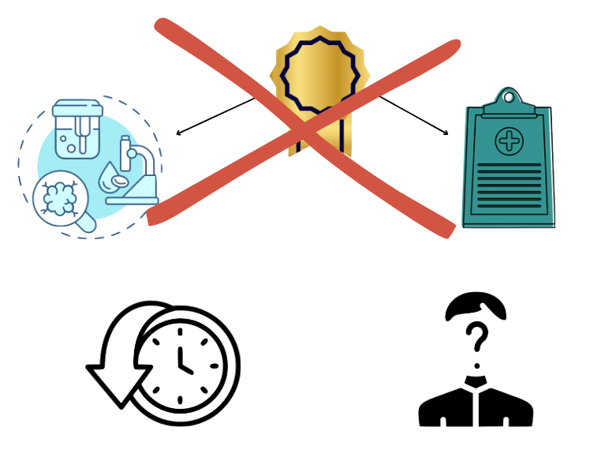

Overview
Every year, heart and lung diseases take the lives of millions around the globe. Diseases like Cardiovascular Disease (CVD), COPD, and Asthma affect more than a billion people worldwide, reducing their quality of life and increasing their risk for premature death. The burden of these illnesses extends beyond the individual, affecting families and healthcare systems.
Current Solutions
Current methods of managing these diseases involve tests performed at doctor’s offices and a review of the patient’s medical history. Unfortunately, this approach is plagued with flaws. They address the condition too late in its progression for easy treatment plans. On top of this, doctor’s lack historical information of a patient’s condition in their home setting, rendering them unable to offer sufficient and specific treatment plans.
